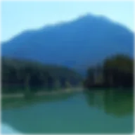

ضبابية

ضبابية ناعمة ومتساوية.
القوة هي حجم الضبابية: 0 حدة كاملة، والأرقام الأعلى تُلطّف الطبقة أكثر. تعمل على الصور والفيديو والأشكال والنصوص والمجموعات.
- حرّك القوة من رقم مرتفع نزولاً إلى 0 لجلب عنوان أو صورة إلى التركيز.
- لضبابية كل ما هو خلف طبقة، أضف طبقة تعديل أولاً ثم ضبابية بعدها.
- للضبابية على طول الحركة، استخدم ضبابية الحركة. للحفاظ على الحدود حادة، استخدم الضبابية الداخلية.
الإعدادات
| الإعداد | النوع | النطاق | الافتراضي |
|---|---|---|---|
| القوة | رقم | من 0 إلى 300 | 10 |